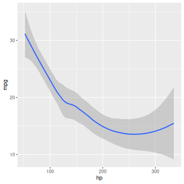
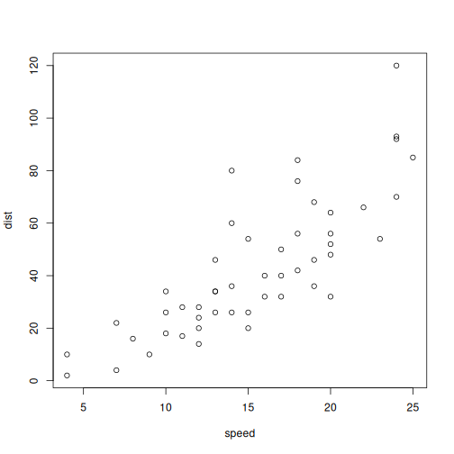

Include external images
You can call the function knitr::include_graphics() in a code chunk to embed external images. This function works for all types of knitr source documents, such as Rnw and Rmd. Below is a simple example:
library(knitr)
include_graphics("figure/003-minimal-html-cars-scatter-2.png", dpi = NA)

You can pass a character vector of mutiple image paths to include_graphics(), and you can also use chunk options related to figures, such as out.width and fig.cap, etc.
Some tests
Below are some tests for the PR https://github.com/yihui/knitr/pull/1776.
Three graphics in the same chunk
images = c("figure/001-minimal-unnamed-chunk-2-1.png", "figure/001-minimal-unnamed-chunk-2-2.png",
"figure/003-minimal-html-cars-scatter-2.png")
Using three times include_graphics():
knitr::include_graphics(images[1])
knitr::include_graphics(images[2])
knitr::include_graphics(images[3])


This is a caption
knitr::include_graphics(images)
This is another caption
Mixing with R plots
knitr::include_graphics(images[1])
plot(cars)
knitr::include_graphics(images[2])
1 + 1
## [1] 2
knitr::include_graphics(images[3])

This is a caption
knitr::include_graphics(images[1:2])
This is a caption
This is another
plot(cars)

this is a plot
1 + 1
## [1] 2
knitr::include_graphics(images[3])
And a last
Placing caption at the top
knitr::include_graphics(images[1])
knitr::include_graphics(images[2])
knitr::include_graphics(images[3])
This is a caption
knitr::include_graphics(images)
This is another caption